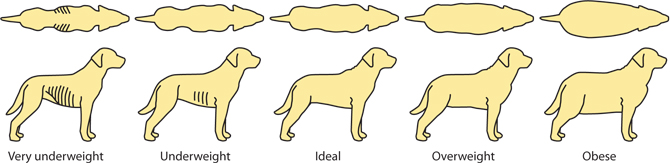
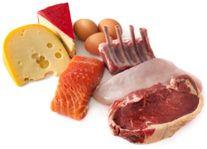
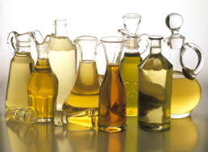
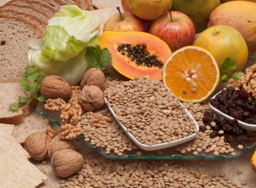
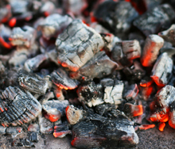
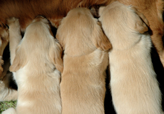

Make no mistake, food is the most important factor in your dog's life. Through diet, he has to get everything his body needs: from the energy needed to keep chasing those balls to the incredible array of nutrients that form every tissue and keep every cellular process going, it must all be delivered through his diet. Too much or too little of any one nutrient can quickly cause upsets and if something gets into your dog's diet that shouldn't be there, you can be sure that problems won't be far away. From weaning right through to old age, it is diet more than any other factor that will determine the quality and the length of your dog's life.
You owe it to your dog to get his food right but don't fret, we're here to help all the way!
What to feed your dog
Back to top
The eternal question... what should I feed my dog?
Unfortunately, there is no one answer. We can help you pick out the foods with the best ingredients but no food suits every dog. Different dogs do better on different diets, so choosing a food will always entail a certain amount of trial and error.
Having said that, by reading pet food labels and knowing what to look for, finding the right food can be made a lot easier, and this is where we can help.
Firstly, you will need to choose which types of foods best suit you and your dog and there are plenty to chose from! For a comprehensive guide on all of the types of food available from dry to raw, complementary to complete, take a look at our guide here.
Once you have decided which categories of food you would prefer to feed, we can help you find the very best varieties from the hundreds that are available - just enter your dogs details and select the types of foods your interested in on our dog food search page to get started.
Even with our help though, all we can do is make an educated guess as to what food is likely to benefit your dog most. All dogs are different and while some dogs will flourish on apparently low grade foods, others might have difficulties on even the highest quality diets. Your dog's health should, therefore, always be the final indicator of a food's suitability.
How much to feed
Back to top
Feeding the right amount is just as important as feeding the right food. All dog foods have feeding guidelines on the packaging. You should always start by following the guidelines for your dog's weight. Your vet will be able to tell you your dog's weight or you can stand on the scales whilst carrying your dog to calculate it at home.

Once your dog is settled on to a food, keep an eye on his weight as this is the easiest way of telling whether or not the feeding amounts are correct. Compare your dog's body shape to the dogs pictured above. Your dog is at his ideal weight when you can feel, but not easily see, the last two or three ribs and when there is an easily identifiable waist line when looking down from above. If your dog is gaining excessive weight, please take a look at our guide for dogs that are prone to weight gain. If your dog is too thin on the other hand, try increasing the feeding amounts by 10% or changing to a higher calorie diet.
Occasionally, dogs fed too much do not gain too much weight, but instead develop digestive problems or other health issues. If a dog is fed much more than needed, the body might respond by rushing the food through in the form of diarrhoea which may in time actually lead to weight loss. If your dog has any health problems, please take a look at our guide to feeding dogs with minor health problems below or for more serious conditions consult your vet.
When to feed
Back to top
For the majority of healthy adult dogs, the feeding schedule can be very flexible. Once you have established a daily feeding amount, you can basically divide it up into as many meals as you want and feed them at times to suit you. Most dog owners opt for 1-3 meals per day but due to the potential link between bloat (a potentially life-threatening illness also known as Gastric Dilatation-Volvulus or Gastric Torsion) and single, large meals, an increasing number of veterinarians are now recommending dividing the daily food allowance into two or more smaller meals spaced across the day. Although any breed can be affected by bloat, there is a higher incidence in deep-chested breeds and for Great Danes, Weimaraners, St. Bernards, Irish setters, and Gordon setters who are particularly at risk, multiple, smaller meals are certainly recommended.
Dogs love consistency so once you have found a schedule that suits you and your dog, it's best to stick with it.
A popular alternative to strict feeding times is free feeding. This is when food is left in the bowl and the dog is allowed to choose when and how much to eat. Although free feeding can work well with some dogs, it is always best to measure out the recommended amount at the start of the day and top up the bowl from that. Once it's gone, it's gone. This is important to avoid over feeding and also helps to prevent fussiness.
There are, however, some exceptions. For example, if your dog becomes hungry easily it is usually best to feed several small meals to make sure the stomach isn't left empty for long periods. For dogs that sometimes go to the toilet in the house at night, it is often helpful to stick to morning or early afternoon meals to make sure the food has time to work its way through before bed time. Some health problems, like diabetes, also require careful consideration of feeding times.
For puppies and pregnant bitches, please take a look at the relevant sections below for guidance on the number and frequency of meals.
Mixing different foods
Back to top
As long as you can get the amounts right, mixing different foods can be an excellent and easy way of increasing the variety and balance of your dog's diet. Although the philosophies can differ between brands, as well as the protein/fat/fibre percentages, the quantities of micronutrients in complete foods generally conform to very similar recommended levels (provided by the PMFA in the UK, AAFCO in America, FEDIAF in Europe etc.), so replacing a percentage of the recommended amount of one complete with the same percentage of another will generally work out more or less the same.
The key is to work with percentages. This is because the nutrient densities of different foods can vary widely, and this is reflected in the manufacturers' recommended feeding amounts. So, stick with percentages: 50% of the recommended amount of food 1 with 50% of the recommended amount of food 2, or 60:40, 70:30, 80:20 etc.
Please note that some dogs need time to adjust to different foods so it is usually better to mix the foods together for each meal rather than alternating between them.
Changing foods
Back to top
A dog's digestive system needs time to fully adjust to a new food. For this reason we always recommend introducing a new food over several days to make the change as smooth as possible. The easiest way would be to feed 75% of the old diet with 25% of the recommended feeding amount of the new food for a day or two, followed by 1-2 days at 50/50 and for the last couple of days feed 25% of the old food with 75% of the new. A slow change is especailly important for dogs with sensitive stomachs which may need to be changed over a longer period.
Changing between different varieties of the same range can be done more quickly as many of the ingredients will be the same, although sensitive dogs may still need to be changed gradually.
Different foods can have dramatically different feeding amounts so make sure to check the guide on the packaging of the new food as both over-feeding and under-feeding can lead to health problems.
Storing your dog food
Back to top
From the moment any ingredient is harvested, its nutritional levels start to drop and the rate at which the nutrients degrade is entirely dependant on how the food is stored. To get the most out of any food, an airtight container is best. There are plenty of options in all sorts of shapes and sizes available from pet shops or you could simply use a normal dustbin or other similar container. A good, sturdy container will also help to fend off any unauthorised raids while you're out. Dry foods should be kept in a cool, dry place while moist foods should be refrigerated after opening and frozen foods should only be thawed just before being fed.
Dog food labelling
The ingredients list
Back to top
The ingredients list is your window into the true nature of your dog's diet. Manufacturers cannot lie on the ingredients list, and although there are ways in which the truth can be obscured or embellished, this is usually easy to spot which makes it possible to separate the good foods from the bad or the possibly bad.
Clear labelling
The most important thing to look for on an ingredients list is clarity. Each ingredient should be named, and the most important ingredients (the 3 or 4 at the top of the list) should ideally be given with a percentage to tell you how much is present.
Broad, umbrella terms like 'cereals' and 'meat and animal derivatives' could refer to a wide range of ingredients of varying quality which makes it impossible to know what your dog is eating. Manufacturers use them either because the recipe regularly changes or, more likely, because naming the ingredients would put customers off. In general, if an ingredients list includes ambiguous terms like these, it is probably best to assume the worst and avoid the food. This is particularly important if your dog is prone to dietary intolerance as identifying and eliminating problem ingredients is not possible unless you know exactly what you are feeding.
What ingredients to look for
Like humans, dogs are omnivores and are capable of digesting and utilising a wide range of foods. Unlike us, however, the dog's digestive system is much more geared-up for meat consumption and benefits from a meat rich diet. Ideally, meat should be the first (and therefore most abundant) ingredient on the list.
Dog food manufacturers use a huge array of ingredients, many of which will be familiar to you, others may not. Our dog food ingredients glossary has plenty of information about the more popular ingredients as well as which ones are worth searching for and which are best avoided.
Smoke and mirrors
All ingredients must be listed in order of how much there is in the food. The first ingredient is, therefore, the largest and most important part of the food. Unfortunately, manufacturers can be quite cunning when it comes to the order of the ingredients so some common tactics to look for include:
Splitting grains: By using several grain sources, the amount of each one is relatively small, placing it further down the ingredients list, but together the cereals may in reality make them the first ingredient.
This can even be done with a single grain - for example, in a maize-rich food, you could simply put 'maize' as the first ingredient, or you could list 'maize flour', 'maize gluten' and 'maize meal' separately. Because the amount of each one is smaller, they appear further down the list making them appear less significant.
Fresh meat in dry foods: In dry dog foods, meat can either be dry (usually called meat meal) or fresh. Both are good quality meat sources but in order to accurately compare them, the water content of the fresh meat must be removed from the equation. Fresh meat is roughly two thirds water while meat meal only contains around 5% water. This means that 20% fresh meat only equates to around 7% dry meat. If fresh meat is the first ingredient, be sure to discount the water and move it down the list accordingly.
'Total meat content': An increasing trend is for dog food manufacturers to list the 'total meat content' rather than the percentage of the individual meat ingredients. This allows the amounts of all of the meat ingredients to be grouped together. For example, instead of:
The typical analysis is where you can find information about the levels of certain nutrients in your dog's food. Every dog food manufacturer has its own idea of what levels of nutrients a dog needs and as a result, the amounts of protein, fat and fibre can vary enormously between foods. While different dogs will do better on foods with different nutritional profiles, I have always found dogs to be extremely adaptable and most can thrive on a wide range of nutrient levels, from the traditional low protein, low fat, high fibre dry foods to the new generation of high protein, high fat, low fibre wet and raw foods. For this reason, unless your dog has a specific health problem, I wouldn't worry about the typical analysis. If your dog does have a health problem, please have a look at our guide to feeding dogs with minor health problems below or for more serious problems consult your vet.
According to British law, all complete dog foods have to display the percentages of protein, fat, fibre and ash on the packaging. Some foods declare the contents of more nutrients, but this is completely voluntary. To find out why each nutrient is important for your dog, take a look at the below guide to dog food nutrients.
Dog food nutrients
All dogs need a wide range of nutrients to live a healthy life. These range from the macro-nutrients like protein and fat which dogs need in large quantities to micro-nutrients like vitamins and minerals which are needed in much smaller amounts but are just as crucial to a dogs health. All dog foods are required to provide the percentages of certain nutrients on the label, but if you need any more details you should get in touch with the manufacturer and they will usually be happy to help.
Protein
Back to top
Protein is an important part of every cell in your dog's body and is essential for healthy growth and repair. Skin and muscle tissue both contain large amounts of protein and it is also the main component of hair and nails. In dogs, protein is also an important energy source.
Dietary protein can come in many forms from many sources. The most natural and digestible form for dogs comes in meat and fish. Dogs have evolved to consume relatively high quantities of meat and their physiology has adapted to easily digest and utilise the nutrients the meat contains. This is why nutritionists always put so much emphasis on the meat content of a food.
Unfortunately, meat is an expensive ingredient and many lower grade dog foods cut costs by substituting meat with cheaper protein sources like soya meal, maize gluten, potato protein, vegetable protein and so on. Proteins from non-meat sources are harder for the dog's body to digest and use and have a higher chance of causing dietary intolerance.
Traditionally, most adult dry foods have contained 20-30% protein (about 5-8% in wet foods) and many dog owners and dog food manufacturers have suggested that higher protein diets can be harmful. More recently, however, a new wave of high-meat/high-protein foods have shown that as long as it comes from good, animal sources, dogs are more than capable of handling high amounts of protein. As with most things, when it comes to protein, quality is much more important than quantity.
Fat / Oil
Back to top
Fats (or oils as they are often called) serve a number of essential functions in dogs. Healthy skin and hair are maintained by fat and per gram, fat provides more than twice the energy of protein or carbohydrates. Certain fats, called essential fatty acids (commonly known as omega 3 and 6 oils) cannot be made by the dog and therefore must be obtained from food. These essential oils are important in controlling inflammation, blood clotting, and brain development and too little can lead to health problems.
Some oils, when eaten in moderation, can be beneficial for dogs and some dog foods have them added as part of the recipe. Common nutritious oil supplements include fish oils, evening primrose oil, borage oil and rosemary oil.
While fats are essential and many can be beneficial, others can be harmful and too much of any fat can lead to obesity and the host of health problems that often come with it. Many dog food manufacturers add large amounts of low grade, highly processed fats (usually just referred to as 'oils and fats' or 'animal fats') to make the food more palatable. Unfortunately, these fats tend to contain large amounts of saturated and hydrogenated fats which can raise blood cholesterol and may contribute to heart disease.
The majority of dry dog foods contain 9-14% fat (about 2-4% in wet foods). If your dog is prone to weight gain, you should look for foods with no more than 10% fat (2.5% wet).
Fibre
Back to top
Although there is some discussion over whether dogs need fibre in their diet or not, there is now a growing consensus that dietary fibre can be very beneficial for dogs.
Fibre is the part of plants that can't be digested. As a result it provides zero calories and passes through the digestive system virtually unchanged, but along the way it serves some very important roles.
Fibre absorbs water like a sponge. This means that if there is excess water in the colon, for example during diarrhoea, any dietary fibre will soak it up and help to produce a firm stool. If, on the other hand, there is too little water in the colon, which often leads to constipation, the fibre will draw water in from surrounding tissues and help to resolve the problem. As you can see, fibre is important in maintaining intestinal health and can effectively treat both constipation and diarrhoea.
Another important function of fibre is as a pre-biotic. This means that is provides a medium and a food source for 'friendly' intestinal bacteria. These bacteria aid in the digestion of food and help to prevent harmful bugs from getting established.
Dietary fibre also slows down the digestion of the other foods it is consumed with. This can be particularly useful in diabetic dogs because the fibre helps to provide a slow, steady release of dietary sugar into the bloodstream. It can also help with weight loss programs as foods that are high in fibre are digested more slowly, allowing the dog to feel fuller for longer while providing less calories.
Fibre is only found in plants, so virtually all grains and vegetables contain some, while meats contain none at all.
Minerals / ash
Back to top
'Ash' is one of the most commonly misunderstood terms in pet food. Contrary to the images it conjures, ash is simply a measure of the mineral content of a food. When calculating the food's calorific content, it is incinerated and the energy released is measured. All of the carbohydrate, fat and protein burn off leaving only the minerals. This is known as the ash content.
In general, foods based on red meat meals have higher ash contents because they contain more mineral-rich bone.
Dogs need a wide variety of minerals to stay fit and healthy, all of which have to be in sufficient quantities in any complete food. For this reason, for most dog owners, the mineral content of the food is fairly unimportant. Two exceptions are dogs with kidney or urinary problems, who benefit from lower ash diets, and growing puppies which need sufficient minerals for healthy bone development.
Minerals are involved in every process in the dog's body. Here's a list of some of the most important minerals and the roles they perform:
Calcium: Necessary for the formation of bone and teeth, nerve transmission, muscle contractions.
Phosphorus: Required for skeletal structure, DNA, RNA structure; energy metabolism.
Magnesium: Needed to allow enzymes to function; hormone secretions; nerve cell membrane interface.
Potassium: Required for healthy nerve function; enzyme reactions; energy metabolism.
Iron: Integral part of haemoglobin and myoglobin; energy metabolism; enzymes in respiration.
Copper: Connective tissue; iron metabolism; blood cell formation and defense against oxidation.
Zinc: Enzyme function; protein and carbohydrate metabolism; skin function and wound healing.
Manganese: Enzyme reactions; bone development; cartilage formation; neurological function and metabolism.
Selenium: Important in the immune system and protection against oxidisation.
Vitamins
Back to top
Vitamins are a group of compounds that are essential for keeping your dog fit and healthy. They cannot be produced in sufficient quantities by the body and so have to be taken in through diet and because they aren't stored very efficiently, daily intake is important. There are currently 13 known vitamins, each of which serves a crucial role in your dog's health:
Vitamin A: Necessary for vision, growth, immune function, foetal development, healthy skin and coat.
B Vitamins (x8): Are primarily involved in metabolising, or deriving energy, from the foods you eat.
Vitamin C: Vital for a robust immune system.
Vitamin D: Important during skeletal development, phosphorus balance, necessary to absorb calcium in the intestine.
Vitamin E: Defense against oxidative damage.
Vitamin K: Is involved in bone development and blood clotting.
Vitamins have become an increasingly hot topic for canine nutritionists of late since many dog food production methods involve very high temperatures which are known to destroy vitamins. For this reason, the vast majority of manufacturers now add synthetic vitamins to their foods. These supplements are much better at surviving the cooking process but have come under criticism from natural feeding advocates who claim that they are nutritionally inferior to natural vitamins. For this reason, some dog food producers have started experimenting with lower temperature baking or even cold-pressing. Raw frozen foods are, obviously, not cooked and so hold on to far more of their natural nutrients and so don't usually require any vitamin supplementation.
Feeding during pregnancy and nursing
During pregnancy and nursing, the developing puppies get all of their nutrients from the mother. Getting the mother's diet right is therefore essential, not only for keeping her healthy, but also for ensuring the puppies have the best possible start in life.
During the first 6 weeks of pregnancy, the puppies remain quite small and don't place too many demands on their mother, so her normal diet will usually be sufficient.
6th week of pregnancy to birth
Back to top
During the last third of pregnancy (weeks 6 - 9) the puppies are growing very quickly, roughly doubling in size each week. This puts enormous demands on the mother, and her diet will have to be bolstered to compensate.
Although extra food would do the job, the mother's stomach capacity will be significantly reduced due to the presence of the puppies, so it is much better to continue to feed the same amount but switch to a higher energy food. Some companies produce specific foods for pregnant and nursing bitches, but any puppy food or high energy diet would be just as effective. As her stomach volume continues to decrease, it is often wise to feed the mother several, smaller meals per day for the last 1-2 weeks of pregnancy (rather than one or two larger meals).
Birth until weaning
Back to top
Following the birth, the mother continues to supply everything the puppies need for growth and development through her milk, and her dietary needs will continue to rise. Continue feeding the high energy food, and begin increasing the amount being fed as shown below, preferably by offering more meals each day rather than larger meals.
Week 1: Feed up to 150% of the usual daily amount.
Week 2: Feed up to 200% of the usual daily amount.
Week 3 to weaning: Feed up to 300% of the usual daily amount.
This guide is very approximate and may need to be adjusted. For example, a mother nursing only one or two puppies will need less than suggested above, and mothers with very large litters (over 6 puppies) may need more. For mothers of larger litters, free feeding may be necessary.
Feeding puppies
Weaning to 8 weeks
Back to top
Weaning is the process of moving your puppies from milk onto solid food. Some dog food producers have special weaning foods, but any puppy food will suffice. If using a dry food, add warm water and mash the food into a porridge-like consistency. Start to introduce the food at the beginning of the puppy's 4th week (not before). The puppies should start eating the food quite naturally, while still taking some milk from their mother. They will need at least 4 small meals per day and over the subsequent days, you will notice the puppies taking more and more solid food while their mother's milk production begins to decrease. The whole weaning process usually takes around 10 days to complete.
During weaning, the mother's feeding amounts can be gradually brought back to normal. Afterwards you can switch her back to her normal food, or if she is lacking condition, it may help to keep her on the higher energy diet until she is back to full strength. If you have any health concerns about the mother or the puppies, please consult your vet.
Dry foods can be introduced from 5-6 weeks of age.
8 weeks to adult
Back to top
At 8 weeks, the puppy has developed enough, physically and psychologically, to allow for a safe move to a new home. Being in a totally new environment and away from the mother and siblings for the first time, this is undoubtably one of the most stressful times of a puppy's life and every care should be taken to making it as easy as possible.
Changing your new puppy's diet at this point would only add to the stress, so whatever the breeder has been feeding, stick with it for at least the first 2 weeks before making any dietary changes.
Take a look at our general dog feeding guidelines to get started working out the right feeding regime for your puppy. Please note that the feeding amounts suggested in our dog food reviews are only provided to help you compare the relative feeding costs of foods and should not be used as an alternative to the feeding guide provided on the packaging.
Your puppy's adult teeth will appear between 3-7 months of age, and may slow down his eating. If you are feeding a dry food, feel free to soften the biscuits with lukewarm water.
Different dogs mature at different rates. Smaller breeds, for example, may reach full size as early as 9 months old while some giant breeds can continue growing until 18 months of age. Once puppies finish growing, they will naturally need less food and many will have a reduced apetite. At this stage it is important to change on to an adult food to avoid excessive weight gain. Take a look at our dog food changing guide for more information. Some dog food brands also make intermediate junior foods which should be fed between the puppy and the adult foods.
Feeding adults (1-7 years old)
Neutered dogs
Back to top
Neutering dramatically alters the dog's hormonal balance, which in turn affects the metabolic rate, amongst other things. Following neutering, bitches in particular (but also some males) tend to have reduced metabolic rates, which means they need less calories from their diet. Often, if they continue to receive the same amount of food, neutered dogs will begin to gain weight. If you notice your dog is gaining too much weight, take a look at our guide for overweight dogs.
Active and working dogs
Back to top
Dogs that are actively exercised for several hours a day naturally burn a huge amount of calories, and their diet needs to represent this. There is a wide choice of working dog foods available, the majority of which are cheap, low grade feeds that, instead of providing extra energy, rely on the owner feeding a lot more to get enough calories in to the dog. There are exceptions, however, but since the best source of calories for dogs is meat, and since meat is expensive, good quality, working dog foods can be fairly expensive. Take a look at our our Dog Food Directory and filter for working dog foods to see what options are available.
Small breeds
Back to top
Small and toy breed dogs tend to have higher metabolic rates than their larger cousins. This means that they tend to benefit from higher energy foods. Many dog food manufacturers produce specific small breed diets but where they are not available, puppy foods usually provide a good alternative. Puppy foods are higher in energy and dry puppy foods have smaller biscuits which many small breeds prefer.
Large breeds
Back to top
Unlike smaller dogs, large and giant breeds mature later, often not reaching their full size until 15-18 months of age, and then reach old age much quicker, with the average life span of many giant breeds being only 6 or 7 years. Because of their rapid ageing process, and because of the weight they carry, special attention must be paid to the joints of larger dogs. Most large breed formulas have added supplements to help support the joints like chondroitin, glucosamine and MSM. For more information, take a look at our guide for feeding dogs with joint problems.
Senior dogs (7 years+)
Back to top
As adult dogs get older, their metabolism starts to slow down. This means their energy level gradually decreases and they therefore need less calories from their diet. Most dog food producers now produce special diets for senior dogs, with fewer calories, but this is more because dog owners want them than dogs need them. Senior dogs can do just as well on a smaller amount of normal adult dog food – after all, wild animals don’t change their diet when the get older, but they do eat less.
Senior diets do however allow for the inclusion of certain supplements to help with the common health problems affecting older dogs. Joint problems, for example, are common in older dogs so senior dog foods often include joint-aid supplements like fish oils, chondroitin, glucosamine and MSM. Of course, these supplements can instead be bought separately and added to any adult dog food. For more information, take a look at our guide on feeding dogs with joint problems.
Most dog food manufacturers classify dogs as ‘senior’ or ‘mature’ when they reach 7 years of age. Although this is a good benchmark, different breeds and different individuals can age at dramatically different rates. For example, small breeds might not begin to slow down until after 10 years, while some large breed dogs might show some of the signs of aging as young as 5 years old. As always, it is best to cater for the individual rather than the rule. When you notice your dog slowing down or eating less, it is probably time to gradually alter the diet.
Feeding fussy or greedy dogs
Feeding fussy dogs
Back to top
Please note that the following advice is for owners of dogs that regularly refuse food with no underlying health problems. If your dog has suddenly lost his appetite it is always best to consult a vet.
Some dogs can be a real pain to feed. No matter what you put down, they are simply not interested, or if they are it's usually only a matter of time before they start turning their nose up. Well don't worry, you are certainly not alone (in fact this is probably the most common dog feeding problem) and in general the remedy is fairly simple.
The main thing to remember is that dogs are not naturally fussy animals, but they are exceptional learners. For example, when a dog refuses food (maybe because he's simply not that hungry, or because he's feeling a bit under the weather), and the worried owner tries to encourage him with tasty additions, exciting new foods or maybe by feeding by hand, he will quickly learn that refusing food always brings something good. This works in exactly the same way as dog training - for example - owner says 'sit', the dog sits, he gets a treat; owner says 'sit', the dog sits, he gets a treat. In no time the dog will sit on command. With fussy dogs the chain of events goes owner offers food, dog refuses, he gets a treat; owner offers food, dog refuses, he gets a treat.
The key to breaking the cycle is to remove the association between refusing food and treats. Strict meal times are essential. One or two a day will help to build up an appetite between meals. Put the bowl down and anything not eaten within 20 minutes can be taken up. Even if nothing has been eaten, DON'T OFFER ANYTHING ELSE! Dogs can go without food for a surprisingly long time with no ill effects (up to several days in the case of medium and large breed adult dogs for example), so be patient, it will be worth it.
Repeat the process at each meal, and keep treats between meals down until the fussiness has ceased. Pretty soon you will see that the food wasn't the problem, it was simply that the dog had been trained to reject whatever was put in front of him.
Feeding greedy dogs
Back to top
Many dogs are always hungry. No matter how much they are fed, they always want more. Some breeds like labradors are particularly prone and for some highly food motivated dogs, their constant begging and scavenging can become a real issue.
Before doing anything, compare your dog with our dog weight chart. If your dog is below normal weight then his hunger is well justified. As long as he is otherwise in good health and his motions are firm you should try gradually increasing his feeding amounts. This will help against his hunger and will also help him to get up to a more healthy weight.
On the other hand, if your dog is normal weight or above, then you know that what he is getting at the moment is sufficient, so we have to find ways of satisfying him better whilst not increasing his overall intake.
Quite often, when a dog is changed from a low-grade food on to a high-quality diet, they can often be left a bit hungry. This is because high-quality foods tend to contain less fillers and more nutritional ingredients so the feeding amounts are lower. Your dog will get used to the smaller feeding amounts in time, but in the meantime you could try some of the techniques below.
One easy way is to feed more regular, smaller meals. For example, instead of feeding two 120g meals per day, you could feed three 80g meals. This will give him less time between meals to build up an appetite.
Light diets contain less calories per gram so you can feed a bit more without over-loading your dog.
You could also add certain home-prepared foods to help bulk out the diet. Well-cooked porridge oats (cooked in water, not milk), well-cooked brown rice or cooked green vegetables can be fed mixed in with their normal food. These foods are high in fibre which will not only help to fill your dog up, it will also slow down the digestion of the normal food making him feel fuller for longer.
Feeding dogs with health problems
Diet and disease
Back to top
A dog's body is an amazing thing. Over millions of years of evolution it has been shaped into an extremely efficient machine. Every cell in every system works in harmony to keep the dog fit and healthy and in order to do so they simply need the right amounts of the right nutrients. In general, things only start going wrong when either an external factor or an inappropriate diet disrupts this harmony.
The point here is that illness is not a random event. It is always the result of some factor, and by minimising those factors, you can reduce the chances of all health problems.
The best way to approach your dog's diet is to try to provide the kind of foods he is supposed to eat. By doing so, his body will get everything it needs and will be spared anything that might cause problems. Consider the 'natural diet' of the dog - either in terms of what they would have eaten in the wild or what the owners might have been providing over the 15,000 years since dogs were first domesticated (there is a lot of discussion over which of these two approaches is more appropriate, but either way, many of the principles are the same). If any ingredient in a dog food does not fit into the 'natural diet' then it may be worth avoiding.
Steering clear of these ingredients is important because if the dog's system has not had time to adjust to it - a process which can take thousands of generations, then it will not be processed properly and may instead cause a reaction. It is no coincidence that many of the most problematic ingredients for dogs (and humans) are also those that have only entered the food chain relatively recently:
Milk and dairy products only became a regular part of the human diet within the last few thousand years, and so probably only entered the dog's diet somewhat later.
Common wheat (Triticum aestivum), although thousands of years old as a species, did not become the staple of the human diet until fairly recently, perhaps only a few hundred years ago.
Soya didn't reach western diets until the early 20th century.
Most chemical additives have only been invented within the last 60-70 years. Before then, many of these molecules did not exist anywhere in the universe.
With so little time to adapt to these new ingredients, it is little wonder that they tend to cause so many upsets in dogs.
Digestive upsets
Back to top
Tummy upsets come in many forms but no matter what the underlying cause, diet should always be the core of any treatment programme. Take a look at our guide to feeding dogs with digestive problems here.
Skin and coat problems
Back to top
Constant scratching or chewing/licking of the skin, especially around the paws is sadly very common in dogs. It can itself be stressful, uncomfortable and often painful for the dog which is bad enough but more often than not it is also a sign of bigger problems under the surface.
Food and digestive health play a major role in almost all skin problems so if your dog has skin sensitivities, be sure to check out our comprehensive guide to feeding itchy dogs here.
Joint problems
Back to top
Many dogs develop joint problems at some point in their lives. A lifetime of wear and tear makes older dogs much more prone but certain factors can bring the onset forward. Genetic factors can contribute enormously, which is why some breeds are so much more prone to joint problems than others. Any history of trauma or surgery to the joints can also lead to problems for any age of dog. Whatever your dog's breed and history though, one of the most important factors of joint health, and certainly the easiest to control, is diet.
Diet affects the joints in two ways - firstly, if the food is right for the dog, the whole body is far better placed to deal with damage and disease. It has the correct balance of important nutrients to maintain a healthy immune system and make any necessary repairs. An inappropriate diet on the other hand can destabilise the immune system making it ineffective or hyper-sensitive and may not provide the necessary nutrients required for joint repair.
Secondly, the diet controls the dog's weight, which can have huge effects on the joints. A small amount of excess weight can put enormous additional strain on the joints, so ensuring your dog is at a healthy weight is essential. Take a look at our guide on how much to feed your dog for more information.
Joint supplements
Joint supplements for dogs have become increasingly popular in recent years. The demand is so high that many dog food manufacturers now incorporate one or more joint supplements in their recipes. Chondroitin and glucosamine are natural constituents of meat and so are present in virtually all dog foods, but some dog foods have additional to provide extra joint support. Methyl-sulphonyl-methane (MSM) is another popular, natural joint supplement. Although many dog owners report real improvements on these three supplements, clinical trials on dogs are virtually non-existant and those done on people are inconclusive. Many oils including fish oils and those found in green-lipped mussels are also reported as reducing inflammation and aiding joint mobility but studies on dogs are sadly lacking. The herb, devil's claw, has proven benefits for humans with joint problems but is very expensive and so is not used in dog foods very often.
If you would like to add any additional supplements to your dogs diet, please consult your vet or herbalist regarding suitability and dosage.
Behavioural problems
Back to top
Although diet can play an important part in many behavioural issues, it is important to consult your veterinarian or canine behaviourist if your dog's behaviour is becoming problematic.
As all parents know, the food a child eats can dramatically affect their behaviour. Sugary foods and certain food additives are the usual suspects and have long been linked with hyperactivity and other associated behavioural problems. Likewise, a dog's energy levels, attention span and demeanour can fluctuate dramatically after eating certain foods. If your dog is showing signs of hyperactivity, we would recommend steering clear of any artificial additives, especially preservatives and colourings, as well as foods with any added sugars. Some nutritionists have also claimed that high protein diets can affect a dog's behaviour but this link has not been proven.
Urinary problems
Back to top
Diet can play an important part in the prevention of minor urinary problems, but if your dog's problems are already established, please consult your veterinary surgeon for advice.
There are many problems that can affect a dog’s urinary system. Bladder or kidney stones, urinary crystals, bacterial infections and cystitis (the inflammation caused by the other conditions) are amongst the most common. Although the causes of urinary problems can very widely, the best way of keeping them all at bay is to make sure the urine doesn't get too concentrated.
Stones and crystals form from minerals in the urine. The more concentrated the urine is, the more likely they are to form. Bacteria in the urine feed off of the nutrients in the urine, so again, keeping the concentration of nutrients low will help. Cystitis is also less irritated by dilute urine.
So how do we keep the urine from being too concentrated? Urine is produced by the kidneys as they filter the blood. Their role is to remove toxins like urea and excess minerals from the blood. Urea is produced when surplus amino acids (the building blocks of proteins) are broken down by the body. High protein diets therefore inevitably produce more urea, so low protein diets are often recommended for dogs that are prone to urinary problems. Minerals come in many forms but calcium, magnesium and phosphorus are amongst the leading contributors to urinary stones. High sodium (salt) diets should also be avoided as they put unnecessary strain on the kidneys.
Water is also crucial to kidney and urinary health. Always ensure your dog has access to plenty of clean, fresh water. If you are feeding a dry food, you could also soak the food in water to ensure water intake is kept up.
Heart problems
Back to top
For dogs with a history of heart problems, diet can be very important in reducing the risk of future problems. Nevertheless, it cannot take the place of proper veterinary support so please consult your veterinarian for full advice on dealing with heart problems.
The best way to help a struggling heart is to reduce its workload. This can be achieved by avoiding any foods that are likely to increase blood pressure like diets that are high in slat (sodium). Many nutritionists also recommend moving away from red meat diets as they are higher in cholesterol which can stick to the inside of blood vessels making pumping blood through them more difficult.
Any additional weight will also put extra strain on the heart so take care to keep your dog in a healthy, lean condition. Take a look at our guide on how much to feed your dog for more information.
Heart supplements
Certain amino acids (the building blocks of proteins) are essential for cardiovascular function. L-carnitine and taurine, for example, are well known for their beneficial properties. Both of these amino acids are naturally produced in the tissues of animals and so are present in virtually all dog foods, although some producers add extra as a health supplement.
Overweight dogs
Back to top
When dogs carry too much weight, they suffer from exactly the same problems as overweight humans. Lethargy, high blood pressure, joint problems, heart problems and diabetes are all much more common in overweight dogs. Keeping your dog at a healthy weight is, therefore, extremely important.
Although some dogs are more prone to putting on weight than others, weight gain is only possible when the number of calories going in is greater than the amount being used by the dog. Therefore, to stop weight gain, or achieve weight loss, your dog has two options: eat fewer calories or burn more - or ideally, both.
Obviously, the easiest way to ensure your dog takes in less calories is to feed less. If you think your dog could benefit from weight loss, try cutting the feeding amount by 10%. If you're not seeing any weight loss after 2-3 weeks, reduce the amount by a further 10%. All treats and tit-bits should be compensated by a similar reduction at meal times and high fat treats should be avoided altogether.
Light diets contain fewer calories to help with weight loss. Take care when choosing a light diet though as some manufacturers reduce calories by replacing the high calorie (high quality) meat with low calorie (low quality) fillers like cellulose. An alternative would be to feed a lower amount of a normal adult food and top up with home-cooked vegetables or well-cooked grains like brown rice or porridge oats.
The second part of any weight loss programme should be exercise. Exercise burns calories and helps to keep your dog healthy. All dogs benefit from exercise, needing at least 30-60 minutes per day, with younger dogs and high energy breeds requiring considerably more. To achieve healthy weight loss, always try to combine healthy feeding with plenty of exercise. For dogs that are unused to a lot of exercise, take care to build up their activity slowly.
Other health problems
Back to top
If you suspect that your dog is suffering from any health problems, we would strongly recommend consulting your vet. Although health issues can come in incredibly wide range of forms, there are some simple dietary principles that can apply to virtually all of them. See our Diet and Disease section for more information.
 The most important thing to look for on an ingredients list is clarity. Each ingredient should be named, and the most important ingredients (the 3 or 4 at the top of the list) should ideally be given with a percentage to tell you how much is present.
The most important thing to look for on an ingredients list is clarity. Each ingredient should be named, and the most important ingredients (the 3 or 4 at the top of the list) should ideally be given with a percentage to tell you how much is present.